Home / Portfolio
Demo da aprire e provare
Trentotto demo costruite da noi per attività inventate: app, siti e gestionali. Le apri tutte dal telefono o dal computer e le provi.


Ombra Atelier
Catalogo, scheda prodotto e carrello: il cliente sceglie colore e quantità e arriva al pagamento.
Guarda il progetto


Vela Drive
Flotta con filtri e prenotazione in tre passi, con il prezzo che si calcola mentre scegli.
Guarda il progettoForno Vesuvio
Il cliente sceglie, compone la sua pizza e ordina dal telefono, senza chiamare.
Guarda il progetto

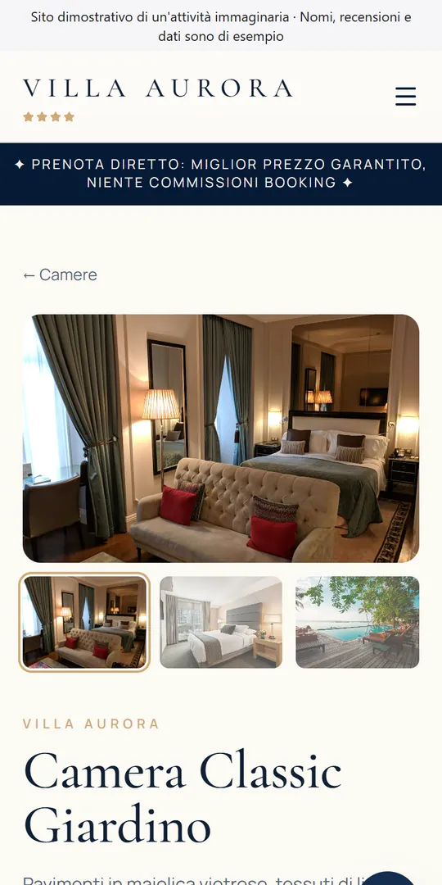
Villa Aurora
Sito per un piccolo hotel sul mare, costruito per le prenotazioni dirette.
Guarda il progetto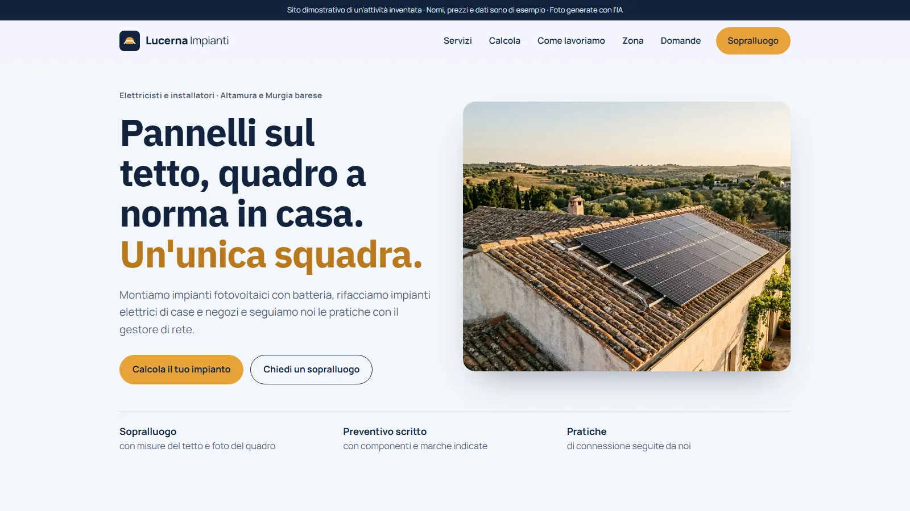
Lucerna Impianti
Calcolo dell'impianto sulla bolletta, con il sole che si muove sul tetto e la stima che finisce nella richiesta di sopralluogo.
Guarda il progetto
Murella Edilizia
La casa si costruisce strato dopo strato mentre scorri, prima e dopo di una facciata e accesso all'area gestionale.
Guarda il progetto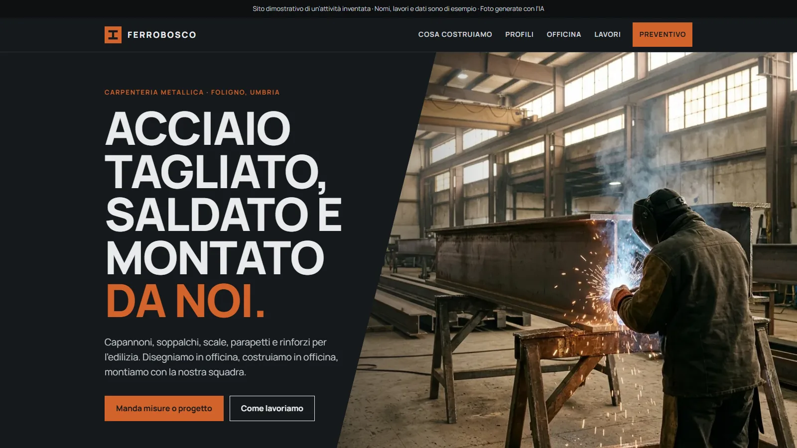
Ferrobosco Carpenterie
I profili in acciaio dei preventivi spiegati con la sezione che si disegna, officina in sei passi e mosaico dei lavori.
Guarda il progetto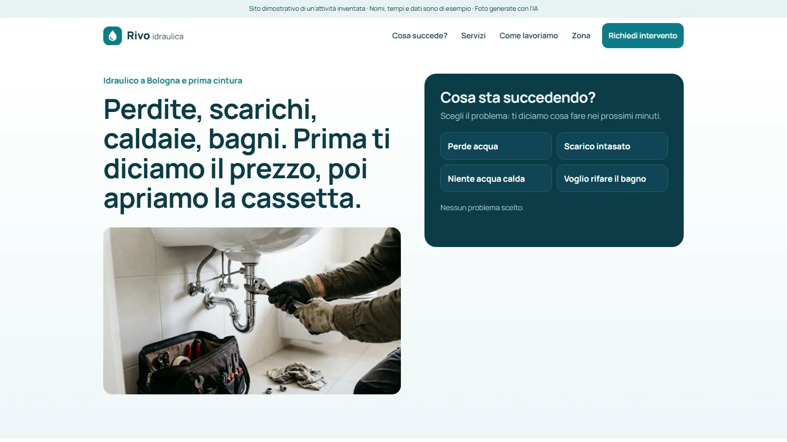
Rivo Idraulica
Scegli il problema e leggi cosa fare subito; il tubo si riempie mentre scorri e la richiesta parte con lavoro e urgenza.
Guarda il progetto
Casalta
Un solo referente, cronoprogramma di dodici settimane che si riempie allo scorrimento e prima e dopo di una cucina.
Guarda il progetto
Brezzanova Clima
Aggiungi le stanze e vedi la potenza di ogni split; il termometro scende a ogni passaggio del lavoro.
Guarda il progetto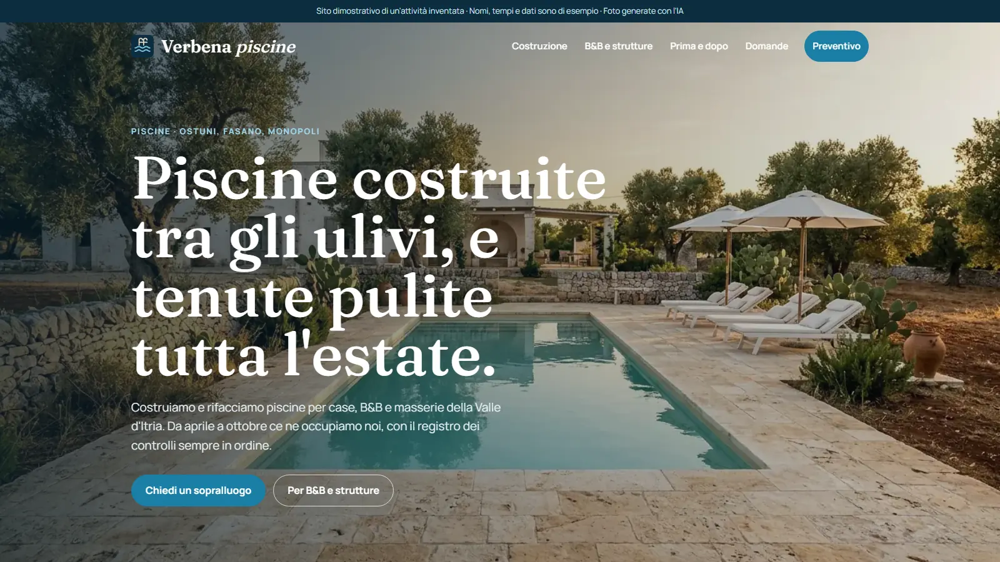
Verbena Piscine
La piscina si costruisce e si riempie mentre scorri, con il calendario di manutenzione per B&B e masserie.
Guarda il progetto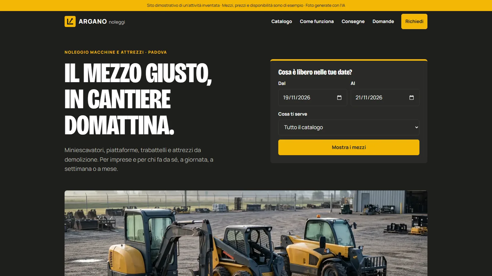
Argano Noleggi
Date in apertura, catalogo con la disponibilità per quei giorni e lista dei mezzi che passa nella richiesta.
Guarda il progetto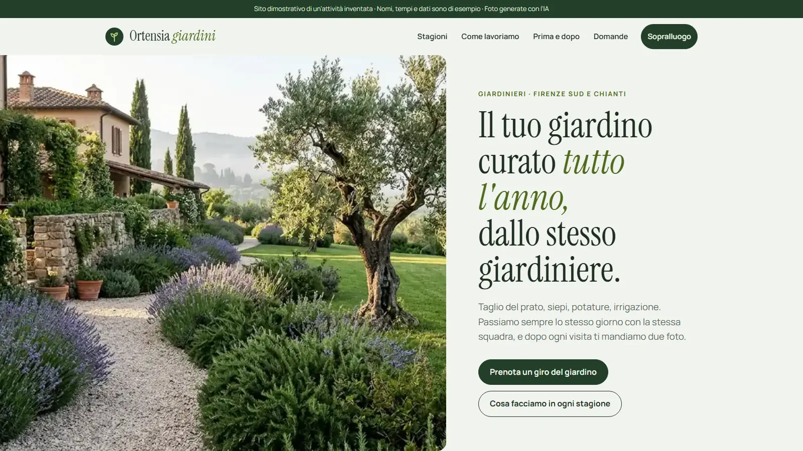
Ortensia Giardini
I lavori di ogni stagione, il prato che cresce mentre scorri e il prima e dopo di un ingresso.
Guarda il progetto
Gestionale per studio commercialista
Scadenze fiscali con il conto alla rovescia, F24 da preparare e pagati, documenti dei clienti e parcelle da incassare. I dati si importano anche da Fogli Google.
Guarda il progetto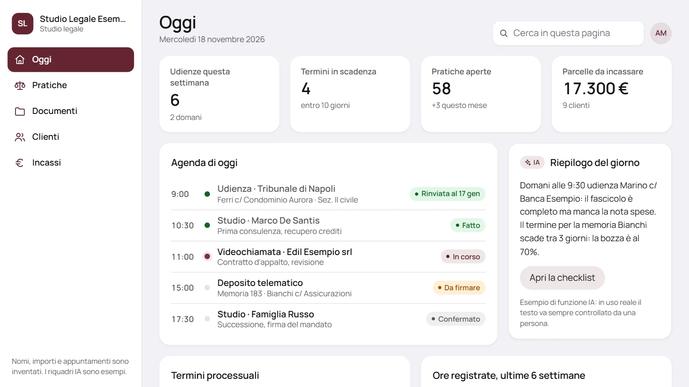
Gestionale per studio legale
Pratiche, udienze e termini processuali sempre sotto controllo, con l'archivio degli atti, i clienti e le parcelle da incassare.
Guarda il progetto
Gestionale per studio dentistico
Agenda delle poltrone, piani di cura a rate, preventivi e richiami: lo studio vede la giornata e i pazienti da una schermata.
Guarda il progetto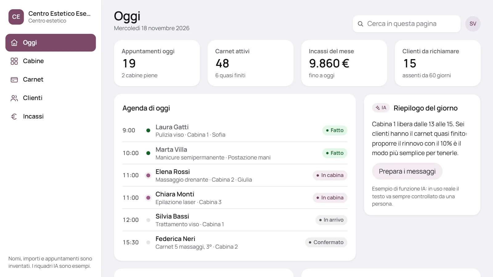
Gestionale per centro estetico
Agenda delle cabine, carnet e pacchetti con le sedute rimaste, clienti da richiamare e rinnovi da proporre.
Guarda il progetto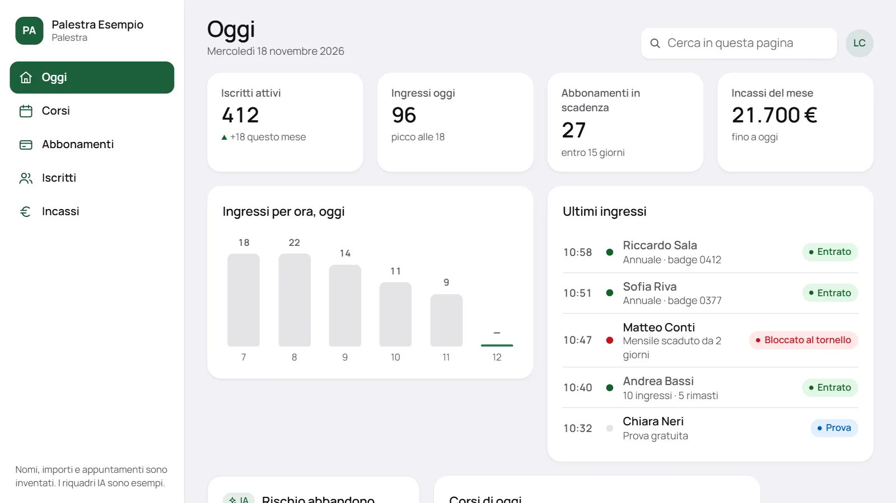
Gestionale per palestra
Ingressi del giorno, corsi con i posti liberi, abbonamenti in scadenza e iscritti a rischio abbandono.
Guarda il progetto
Gestionale per impresa edile
Cantieri con l'avanzamento, SAL da emettere, squadre e presenze del giorno, preventivi e committenti.
Guarda il progetto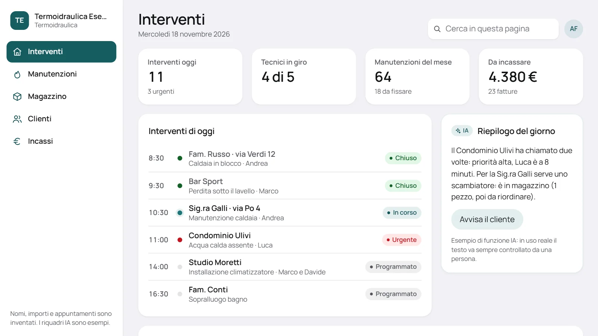
Gestionale per termoidraulica
Interventi del giorno, tecnici in giro, manutenzioni delle caldaie in scadenza e ricambi in magazzino.
Guarda il progetto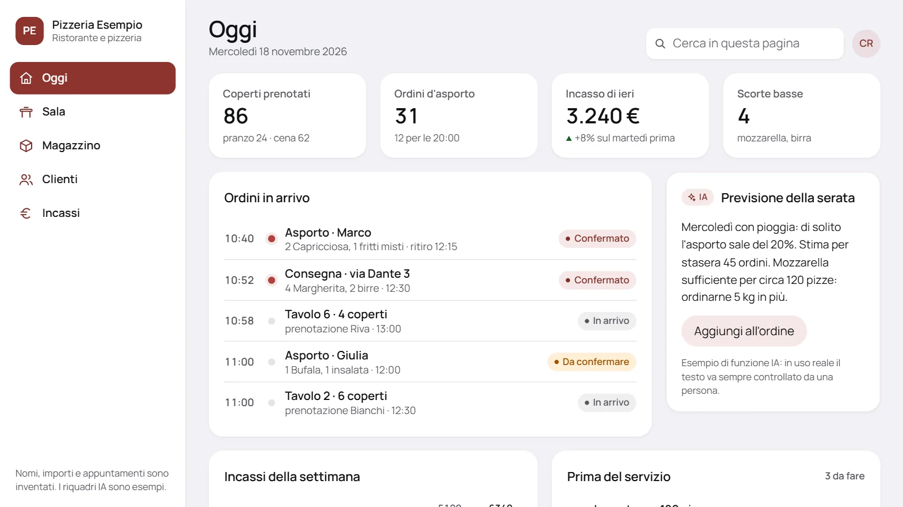
Gestionale per ristorante e pizzeria
Ordini in arrivo, sala con i tavoli e le prenotazioni, scorte per la serata e incassi divisi per canale.
Guarda il progetto
Gestionale per hotel e B&B
Camere in tempo reale, arrivi e partenze, prenotazioni per canale, giro delle pulizie e ospiti da ricontattare.
Guarda il progettoSpiedo Nero
Kebab da comporre, codice sconto, ordine seguito passo passo e tessera punti.
Guarda il progettoOnda Sushi
Offerta con il conto alla rovescia, allergeni in chiaro, mancia e orario nel carrello.
Guarda il progettoLa Cuccia del Colle
Prezzi per taglia, notti calcolate da sole e il diario della giornata del cane.
Guarda il progettoSalvia
Trattamenti spiegati, orari liberi veri e appuntamenti da annullare in un tocco.
Guarda il progettoCampo Vivo
Campi liberi ora per ora, quota a testa in quattro e corsi con i posti rimasti.
Guarda il progetto

Bolle
Prezzo per tipo di veicolo, stato del lavaggio in diretta e caffè ordinato dalla sala.
Guarda il progettoStudio Sorriso Chiaro
Prossimo appuntamento, promemoria da scegliere e piano di cura con le rate.
Guarda il progettoZagara
Torte con la scritta in anteprima, ritiro a orario e numero d'ordine da mostrare in cassa.
Guarda il progettoArdesia Case
Filtri veri, scheda con planimetria e mappa, visita prenotata in tre tocchi.
Guarda il progetto
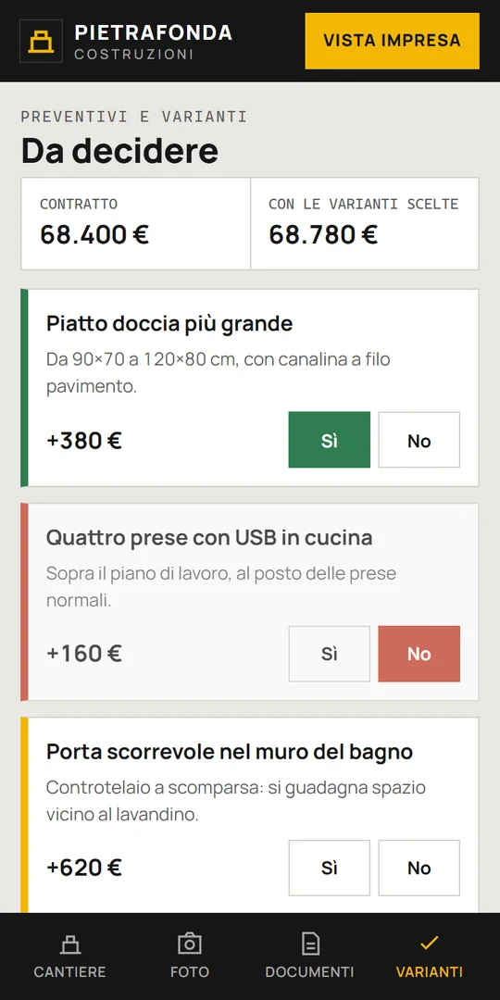
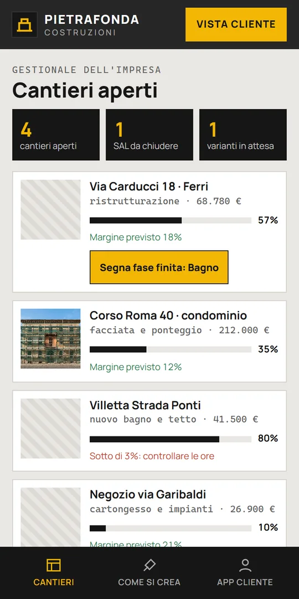
Pietrafonda Costruzioni
Il cliente segue il cantiere e approva le varianti; l'impresa vede tutto nel gestionale.
Guarda il progettoVortice Impianti
Urgenza in un tocco, prezzi indicativi, foto del problema e tecnico seguito sulla mappa.
Guarda il progettoLibeccio
Barche con o senza patente, skipper, extra e meteo del mare per scegliere il giorno.
Guarda il progettoNido Il Gelso
Diario della giornata, avvisi con risposta, menu, presenze e retta in un'app sola.
Guarda il progettoCedro
Menu con il piccante a peperoncini, tavolo in sala o dehors e asporto a orario.
Guarda il progettoPasso Studio
Configuratore con anteprima che cambia: colori per parte, materiale e iniziali sul tallone.
Guarda il progettoStudio Arco
Chiamata con trascrizione dal vivo, riepilogo per la segreteria e appuntamenti in agenda.
Guarda il progettoTi serve qualcosa di simile?
In call ti mostriamo cosa si può costruire per te.